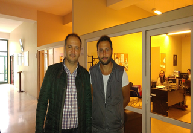

SERKAN ÖĞMEN
1.SORU
*Mesleğinizi seçerken nasıl beklentileriniz vardı, severek ve isteyerek başladığınız bir meslek mi oldu sizin için?
CEVAP
Sürekli hareket olan yapılan çalışmaların verilen emeklerin sonucunda bir şeylerin reel olarak ortaya çıkması seçeceğim meslekte beni en çok tatmin edecek özellikti. Bu doğrultuda ve tabi teknoloji merakımın da etkisi ile okuduğum bolumu seçtim. Sadece seçtiğim bolumu yazdım. Ve o doğrultuda ilerledim. Sektörde 22 seneyi geçtiğim su donemde halen seçtiğim mesleğin bana en uygun meslek olduğunu düşünüyorum.
2.SORU
*Çalışıtığımız firmaların teknolojiye odaklı beraber konuşarak yeni bir şeyler üretme fikri benim için çok etkileyicidir. Sektör olarak geliştirilebilecek sonsuz tane fikir oluşabilir. Bu oluşan fikirleri hayata geçirmek bittiğini görmek bizi çok mutlu eder.
3.SORU
*İşe başladıktan sonra yeni bir programlama dili öğrenmek durumunda kaldınız mı, evet is ne gibi zorluklar yaşadınız?
CEVAP
Okulda öğrendiğim programlama dillerini kullanmadım. Ancak algoritma dersinin bilişim ile ilgili olsun olmasın insanın yaşamının her yerinde ihtiyacı olduğunu düşünüyorum. Ve son derece faydalı bir ders olduğunu düşünüyorum. Algoritma eğitimini iyi alan bir öğrencisinin yeni bir yazılım, yeni bir teknoloji vs herhangi bir konuda adaptasyon sorunu yaşayacağını düşünmüyorum.
4.SORU
*Yazılıma ne kadar zaman ayırıyorsun ve bu senin yaşantını nasıl etkiliyor ?
CEVAP
Yazılımların bitme süreçleri bu sektörün genel sorunudur. Surelerin çok uzaması insanların ihtiyaçlarının çok dışında bir yere doğru olayın gitmesi, amacın dışına çıkması can sıkıcıdır. Ayrıca bu gecikmelerden ötürü yeni yazılan bir yazılım bittiğinde eski teknoloji olabilmektedir.
5.SORU
*Ülkemizdeki yazılım sektörü ile ilgili konuşmak gerekirse...
CEVAP
Okulda alınan eğitim yazılımın doğasını anlamak adına yeterlidir. Ancak yazılım da en ciddi konu yazılımcı arkadasın sürekli kendini geliştirmesidir. Bu sektörde olduğu sure boyunca geliştirme her daim devam edecektir. Yazılım uzmanlığı yazılım diline geliştirilen sektöre gore bile değişkenlik gösterebilmektedir.
6.SORU
*Başkalarının yaptığı kodları alıp okuyormuyum?
CEVAP
Teknoloji’nin işleri kısalttığı bilinen bir gerçek. Bu firmalar arasında hızla yaygınlaşmakta. Su an beklenenin çok altında olsa da bir karsı durmadan çok öğrenme cabası olduğu görülüyor. Her gecen yıl yazılım yatırımları artmaya devam ediyor.

TEŞEKKÜR EDERİZ.